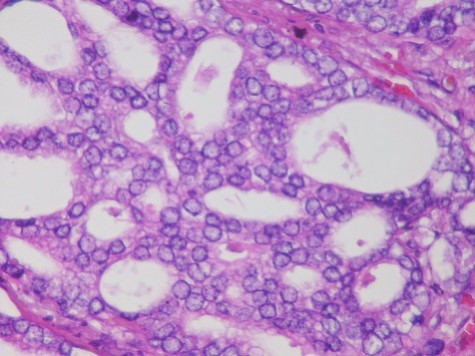

¿Cómo se propaga el cáncer?
El cáncer se puede propagar del lugar en el que surgió (el sitio primario) a otras partes del
cuerpo.
Cuando las células cancerosas se desprenden de un tumor, éstas pueden viajar a otras áreas del
cuerpo a través del torrente sanguíneo o el sistema linfático. Las células cancerosas pueden
desplazarse a través del torrente sanguíneo y así llegar a partes u órganos distantes. En caso
de que las células cancerosas de desplacen a través del sistema linfático, las células
cancerosas puede que se establezcan en los ganglios linfáticos. De cualquier manera, la mayoría
de las células cancerosas que se fugaron del sitio primario perecen o son combatidas antes de
que puedan desarrollarse en otro sitio.

Para que las células cancerosas se propaguen a nuevas partes del cuerpo, éstas tienen que pasar por
varios cambios. Primero es necesario que puedan desprenderse del sitio del tumor primario y luego
que se pueda establecer o adherir a la capa o pared exterior de algún vaso linfático o sanguíneo.
Luego tendrían que poder traspasar esta pared o capa para así entrar al torrente sanguíneo o al
sistema linfático, alcanzando otros órganos o ganglios en el cuerpo.
Las células cancerosas se diseminan por el cuerpo en varios pasos: Aparecen dentro del tejido normal
cercano o invaden ese tejido. Atraviesan las paredes de los ganglios linfáticos o vasos sanguíneos
cercanos. Viajan por el sistema linfático y el torrente sanguíneo a otras partes del cuerpo.